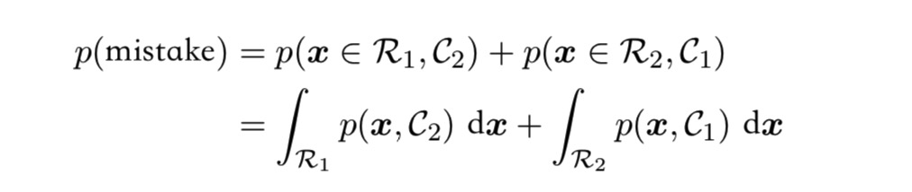
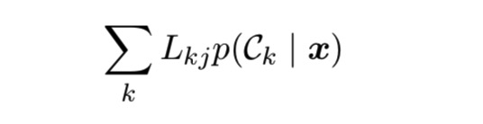
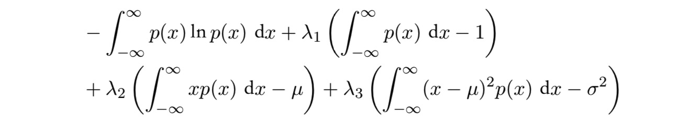
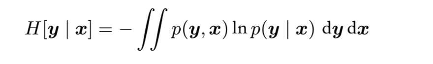

贝叶斯概率
\(p(D \ | \ w)\) 由观测数据集 \(\mathcal{D}\) 来估计，称作似然函数，它表达了在不同的参数向量 \(w\) 下，观测数据出现的可能性的大小。
在贝叶斯观点和频率学家观点中，似然函数 \(p(D \ | \ w)\) 都非常重要，但有着本质的不同。
在频率学家的观点中，\(w\) 被认为是固定的参数，它的值由某种估计来确定，使用最大似然估计，其中 \(w\) 的值是使似然函数达到最大值的 \(w\)。
贝叶斯的观点包含了先验概率，假如抛一枚普通的硬币3次每次都是正面朝上，用最大似然估计硬币正面朝上的概率会是1，表示未来不管怎么抛只会出现正面，这是不合理的，因为我们前面假定了“普通的硬币”，所谓普通就是正常的正反面概率都是 0.5 的硬币。但是如果这样想，假如我们事先并不知道它是普通的还是特殊的，那么贝叶斯并不能给我们带来什么好处，事实上当先验选择不好时会有很大的可能出现错误结果。
高斯分布
一维高斯分布：
\(\mathcal{D}\) 维高斯分布：
假定我们有一个已观测的数据集X = \((x_1,x_2,…,x_N)\) ，表示标量变量 \(x\) 的N次观测，假定各次观测是独立地从高斯分布中抽取的，分布的均值 \(\mu\) 和方差 \(\sigma^2\) 未知，我们想通过这个数据集来确定这两个参数，假设给定 \(\mu\) 和 \(\sigma^2\) 我们可以算出数据集的概率：
这就是高斯分布的似然函数，我们可以用最大似然来确定 \(\mu\) 和 \(\sigma^2\) 得到：
但是最大似然方法低估了分布的方差(bias):
下面对于方差的估计是无偏的：
注意当数据点的数量 N 很大时，偏移很小可以忽略。
曲线拟合问题
曲线拟合的目标是根据 N 个输入 x=\((x_1,x_2,…,x_N)^T\) 组成的数据集与它们对应的目标值t =\((t_1,t_2,…t_N)^T\) ，在给定新的输入变量 \(x\) 的情况下，对目标变量 \(t\) 预测。
我们可以使用概率分布来表达关于目标变量的不确定性，假定给定 \(x\) 的值，对应的 \(t\) 服从高斯分布，分布的均值为 \(y(x,w)\) ，定义精度参数 \(\beta\) 对应分布方差的倒数：
假定数据 {x, t} 从上式分布抽取，那么似然函数为：
进一步，对数似然函数可写为：
首先考虑多项式系数的最大似然解 ( \(w_{ML}\) ) ，我们可以发现最大化对数似然函数与最小化平方和误差函数是等价的，在高斯噪声的假设下。
同样的可以确定 \(\beta_{ML}\):
那么现在我们可以根据这个模型来对新的 \(x\) 值对应的 target t进行预测:
上面完全是最大似然法的思想，现在我们考虑加入系数 \(w\) 的先验分布，其中 \(\alpha\) 是分布的精度（hyper parameters），M+1 时对于 M阶多项式的向量 \(w\) 的元素总数:
可以得到 \(w\) 的后验概率：
最大化后验概率(MAP)就是最小化：
这等价于最小化正则化的平方和误差。
贝叶斯曲线拟合
上面我们仍然是根据后验分布对 \(w\) 进行点估计，然而这不是贝叶斯的观点，贝叶斯方法是自始至终使用概率的加和规则和乘积规则：
为了简化记号，上面忽略了对于 \(\alpha \) 和 \(\beta\) 的依赖，可以证明，预测分布由高斯的形式给出：
下面是用贝叶斯方法得出的预测分布的结果，使用的多项式为八次多项式( M=9 )，其中红色曲线表示预测概率分布的均值。
模型选择
上面我们指定了模型为八次多项式(M=9)，但是如何确定最优的 M 呢？我们需要有测试数据来测试在当前的 M 的选择下，它在测试数据集上的误差有多大。我们需要将原始数据集划分为训练数据集和测试数据集，但很多情况下数据非常宝贵，我们想让尽可能多的数据得到训练，这时候可以使用交叉验证。
决策论
当决策论与概率论结合时，我们可以在涉及不确定性的情况下作出最优决策。
最小化错误分类率
假定一个分类问题，我们需要一个规则为每个未知类别(但可以通过之前的训练得到各个类别的概率)的 \(x\) 确定一个合适的类别，这种规则将输入空间分成k不同的区域 \(\mathcal{R}_k\)，称之为决策区域，为了找到最优决策规则，我们需要计算犯错（比如你把它分类成\(C_1\)但它其实是\(C_2\)）的概率，考虑一个二分类问题：

为了最小化 p(mistake) 我们想让上式被积函数尽可能小
$$p(x, C_k)= p(C_k\ |\ x)\ p(x)$$
如果我们都把每个 x 分类到后验概率 \(p(C_k\ |\ x)\) 最大的类别中，那么分类错误率就会最小。
上图中决策边界 \(x=\hat{x}\) ，\(x\geq \hat{x}\) 被分类为 \(C_2\)，\(x< \hat{x}\) 被分类为 \(C_1\) ，错误出现在蓝色绿色和红色区域，其中蓝色和绿色区域面积之和是不变的，我们需要最小话红色区域的面积，也就是当 \(\hat{x}=x_0\) 时分类错误率最小，这个规则将 \(x\) 分类到具有最大后验概率的区域中。
对于更一般的 K 分类，最大化正确率较为简单，即最大化：

最小化期望损失
很多情况下单纯的最小化错误分类的数量是不合适的，我们应该通过损失函数来刻画损失。假设对于新的 \(x\) ，真实的类别是 \(C_k\) ，我们把它分类为 \(C_j\) ，这样做我们会造成某种程度的损失，记作 \(L_{kj}\)，最优解是使损失函数最小的解，计算得到使得loss 期望最小时的分类规则：
要让这个期望最小，决策规则是对于每一个新的 \(x\) ，把它分到能使下式取得最小值的第 j 类：

拒绝选项
对于类别归属相对不确定的情况，避免做出决策是更合适的选择，这被称为reject option，例如在X光片自动化诊断系统中，把不容易分类的X光片留给人类专家。
引入一个阈值\(\theta\) ，拒绝后验概率 \(p(C_k \ |\ x )\) 的最大值小于等于 \(\theta\) 的那些输入 \(x\)
若 \(\theta=1\) 则所有的样本都会被拒绝，而若有 K 个类别，那么令 \(\theta< \frac{1}{K}\) j将会确保没有样本被拒绝。
推断与决策
我们把分类问题分成了两个阶段：推断(inference)和决策(decision)。在推断阶段我们使用训练数据训练模型，学得\(P(C_k \ |\ x)\) 的概率，然后决策阶段用这些后验概率来进行最优分类。
另一种可能的方法是，同时解决两个问题，即学习一个函数可以将输入 \(x\) 直接映射为决策，这样的函数被称为判别函数(discriminant function)
事实上我们可以区分出三种不同的方法来解决决策问题：
- 首先对每个类别 \(C_k\) 确定类条件概率 \(P(x\ | \ C_k)\) ，然后推断先验类概率 \(p(C_k)\) ，之后使用贝叶斯定理确定后验类概率 \(P(C_k\ | \ x)\) 。我们也可以直接对联合概率分布 \(P(x ， C_k)\) 建模，这种建模方法被称为生成式模型(generative model)，因为通过采样，我们可以人工来生成输入空间的数据点。
- 首先确定后验类概率 \(P(C_k\ | \ x)\)，这种直接对后验建模的方法被称作判别式模型(discriminative models)
- 找到一个函数 \(f(x)\)，称为判别函数，这个函数将每个输入直接映射为类标签，这种情况下概率不起作用
第一种方法需要求解的东西最多，它涉及寻找联合概率分布 \(P(x ， C_k)\) ，对于很多应用，\(x\) 的维度很高，需要大量训练数据才能在合理精度下确定类条件概率密度（维度灾难）。但它有个优点是可以求出 \(p(x)\) ，这对于检测模型中的离群点很有帮助。
但是若只想进行分类的决策，我们完全没必要干这些事，只用求出后验概率就行了，也就是第二种方法，直接确定后验概率
最简单的是第三种方法，把推断和决策结合到一个学习问题中了，但它无法得到后验概率。
而后验概率在很多方面是有用的：
- 最小化风险
- 拒绝选项
- 补偿类先验概率
- 组合模型（独立性假设，朴素贝叶斯模型）
回归问题的损失函数
之前讨论的是分类问题的决策，现在考虑回归问题。
决策阶段对于每个输入 \(x\) ，选择一个对于 t 值的估计 \(y(x)\)，这样就会有一个损失 \(L(t,y(x))\) ，期望损失就是：
损失函数的一个通常选择是平方损失 \(L(t, y(x))=\{y(x)-t\}^2\) ，这种情况下的期望损失就可写成：
目标是选择 \(y(x)\) 来最小化期望损失，可以用变分法求解：

最小化期望平方损失的 \(y(x)\) 为条件概率 \(p(t\ | \ x)\) 的均值。
也可以用另一种方式导出这个结果：
当 \(y(x)=E(t\ |\ x)\) 时第一项取最小值，而我们要寻找的 \(y(x)\) 只出现在第一项。
与分类问题相似，我们可以确定合适的概率然后使用这些概率作出最优的决策，或者也可以建立直接决策的模型。
我们也可以选择其他损失函数，平方损失函数的推广——闵可夫斯基损失函数(Minkowski loss)，它的期望是：
信息论
信息量可以被看成当学习 \(x\) 的值时的惊讶程度，我们对于信息内容的度量依赖于 \(p(x)\) ，因此我们想要寻找一个函数 \(h(x)\) ，它是概率的单调递减函数（概率越低信息量越大），同时它也应满足对于两个不相关事件，我们观察到两个事件同时发生获得的信息应该等于观察到事件各自发生时获得的信息之和，即有 \(h(x,y)=h(x)+h(y)\) 因此有：
$$h(x) = -log_2 \ p(x)$$
我们遵循信息论的普遍传统，使用2作为对数的底，在这种情况下 \(h(x)\) 的单位是比特。
随机变量 \(x\) 的平均信息量是：
它被称为熵（entropy），注意
熵与最短编码长度密切相关，熵是传输一个随机变量状态值所需的比特为的下界。考虑一个具有8种可能状态的随机变量，每种状态都是等可能的，为了传输这个随机变量，我们需要3 bits: 2x2x2 有8种可能，而它的熵也为：
现在开始我们使用自然对数作为底，这样处理起来更简单。
我们考虑连续变量的最大熵，为了让这个最大值有个合理的定义，我们限制:
因此我们要优化下面关于 \(p(x)\) 的函数：

用变分法令这个函数的导数等于0，得到：
代入三个限制方程，最终的结果为：
非常神奇，它竟然是一个高斯分布。
条件熵：

它满足：

因此，描述\(x\) 和 \(y\) 所需的信息是描述 \(x\) 自己所需的信息加上给定 \(x\) 的情况下确定 \(y\) 所需的额外信息。
相对熵和互信息
考虑某个未知的分布 \(p(x)\) ，假定我们使用一个近似的分布 \(q(x)\) 对它进行建模，由于我们使用了 \(q(x)\) 而不是真实分布 \(p(x)\) ，所以需要一些附加信息，我们需要的平均的附加信息量：
这被称为分布 \(p(x)\) 和 \(q(x)\) 之间的相对熵，或者KL散度，可以看出相对熵是由 \(q(x)\) 得到的平均编码长度比由 \(p(x)\) 得到的平均编码长度多处的bits
我们已经知道任意凸函数 \(f(x)\) 都有这样的性质：
其中 \(\lambda_i \geq 0\) 且 \(\sum_i \lambda_i=1\) ，上式结果被称为 Jensen 不等式，如果把 \(\lambda_i\) 看成 \(x_i\) 的概率分布，那么上式可以写成：
对于连续变量， Jensen 不等式可以写成：
于是我们可以得到：
当且仅当 \(q(x) =p(x)\) 时取等，KL散度描述了两个概率分布的差异性，差异越大KL散度越大。
我们也可以用KL散度来判断两个变量 \(x\) 和 \(y\) 是否接近独立：
这被称为变量 \(x\) 和 \(y\) 的互信息，且有\(I(x,y) \geq 0\) ，当且仅当 \(x\) 和 \(y\) 相互独立时取等。
互信息和条件熵之间的关系：
可以把互信息理解成由于知道 \(y\) 值而造成 \(x\) 的不确定性的减小。